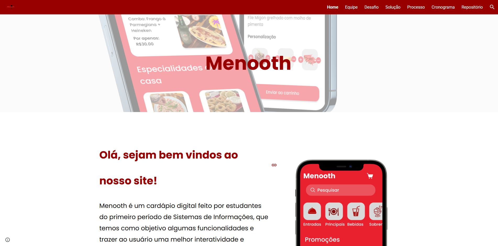

Projetos

Menooth
Desenvolvido no meu primeiro período em Python, o Menooth é um cardápio digital interativo.
Ver projetoFrogger
Desenvolvido em C, o jogador controla um sapo com as teclas W, S, D para desviar de cobras e troncos. O objetivo é sobreviver o máximo possível, acumulando pontos com o tempo.

Consulta Fácil
Projeto desenvolvido em Mendix: um site para agendamento de consultas médicas em uma clínica.